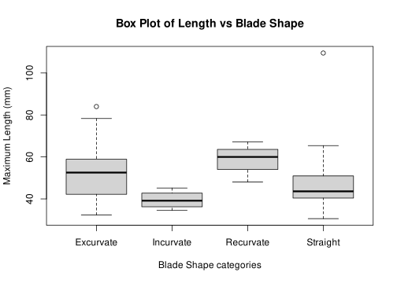
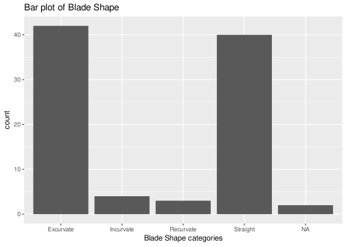
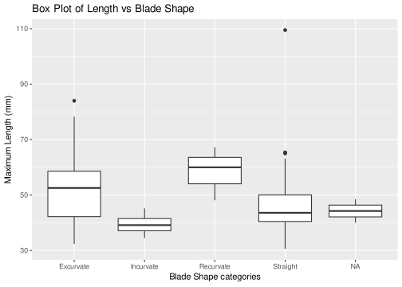

# Calculate the mean of a numeric vector
numbers <- c(1, 2, 3, 4, 5)
mean_value <- mean(numbers)
print(mean_value)[1] 3Before learning more about R, make sure that everything is set up properly and that you understand the basics in RStudio GUI.
To ensure that both R and RStudio have been installed correctly, follow these steps:
version.If any of these steps fail, consider reinstalling R and RStudio, ensuring they are compatible with your operating system.
The RStudio interface, or Graphical User Interface (GUI), is designed to help you work efficiently with R. By default, it consists of four main panes or panels, each potentially containing multiple tabs:

Many of the various elements of RStudio GUI are self-explanatory or further explained by pop-up texts and windows. Still, beginners and occasional users can be assured that most elements can be ignored.
To customize RStudio, go to Tools > Global Options (or RStudio > Preferences on macOS). Here, you can adjust various settings, including:
RStudio Projects help organize your work by keeping all related files, scripts, data, and outputs in one place. Each project has its own working directory, which helps to manage dependencies and to maintain reproducibility. Projects are especially useful for keeping different analyses or projects separate from one another.
To create a new project in RStudio, follow these steps:
In RStudio, both R scripts and Rmarkdown notebooks (or rendered notebooks) are used to write and execute R code, but they serve different purposes and have distinct features:
Example of a small R script, “print_mean_value.R”, followed by its output once executed:
# Calculate the mean of a numeric vector
numbers <- c(1, 2, 3, 4, 5)
mean_value <- mean(numbers)
print(mean_value)[1] 3In this script, we define a vector, calculate its mean, and print the result. The focus is on the code itself, without additional formatting or documentation.
Rich Content: RStudio allows you to create and use special files, named RMarkdown (.Rmd file extension), that combine formatted text in Markdown (e.g. headings, images, and links) and executable pieces of code or code “chunks”. When added to a Rmarkdown, the code inside a chunk can be executed on-demand by clicking on the play button on its top right corner.
Interactive Execution: Rmarkdown supports interactive, cell-based execution, similar to Jupyter notebooks. Each code cell outputs results directly below it by default, which is useful for exploratory data analysis and iterative workflows.
Output Options: Notebooks can be rendered into various formats, such as HTML, PDF, or Word, allowing you to create polished, shareable reports directly from your analysis. It is possible to have code being run and rendered with output directly into a HTML file by choosing html_notebook, a type of output that approaches the one of Jupyter notebooks.
Example of a small RMarkdown document, “mean_value_analysis.Rmd”:
## Calculate the Mean of a Vector
In this analysis, we calculate the mean of a simple numeric vector.
```{r}
# Define the numeric vector
numbers <- c(1, 2, 3, 4, 5)
# Calculate the mean
mean_value <- mean(numbers)
mean_value
```
The mean of the vector is `r mean_value`.In this document, Markdown is used to add a heading and text explanation, while the code chunk calculates and displays the mean. The output is shown directly below the code, creating an interactive, document-like format. Notice we can also use ` r object_name ` to print inside a markdown line the value of an R object, in this case a single number.
How it would look in RStudio:
And this is how it would be rendered in HTML:
In this analysis, we calculate the mean of a simple numeric vector.
# Define the numeric vector
numbers <- c(1, 2, 3, 4, 5)
# Calculate the mean
mean_value <- mean(numbers)
mean_value[1] 3The mean of the vector is 3.
You can learn more about Rmarkdown at the Get Started tutorial offered by its developers.
In summary, scripts are optimal for code-centric work with minimal formatting, while Rmarkdown documents offer a flexible, document-like interface ideal for combining narrative and code in a single file.
In addition to R scripts (.R) and RMarkdown notebooks (.Rmd), RStudio supports creating and editing various other file types, making it a versatile environment for different types of content and workflows. To create a new file, go to File > New File and select the desired file type.
Some examples of files you can create and edit in RStudio include:
To create a file with an extension not listed in RStudio, simply create a plain text file (e.g., “newFile.txt”), modify its name and add the desired extension (e.g., “newFile.json”, “newFile.css”, etc.). This flexibility allows you to manage all parts of your project, from data processing to documentation, within RStudio.
In R, variables or vectors are created by assigning values using the <- operator. A variable in R corresponds to values of a specific data type, including:
x <- 10.5y <- 3Lname <- "Alice"TRUE or FALSE, e.g., is_true <- TRUEVariables store data for manipulation and analysis, forming the building blocks of R programming. Variables and data structures (see bellow) can be all referred as “R objects”, and once created, they will appear listed in the Environment tab in the Environments panel (top right).
Data structures are more complex objects that are also created using the <- operator.
Vectors (i.e. variables): The most basic data structure, a vector is a sequence of data elements of the same type (numeric, character, or logical). Created with c(), e.g., c(1, 2, 3) or c("a", "b", "c").
Matrices: Two-dimensional, homogeneous data structures (all elements are of the same type). Created using matrix(), e.g., matrix(1:9, nrow = 3, ncol = 3).
Factor: A factor is a special case in-between a vector and a matrix, designed to facilitate operations with categorical variables. While a factor will often seem equivalent to a Character vector (e.g., c("Yes", "No", "Yes")), it will be treated as a two column matrix where character values are mapped to a numeric index, assigned arbitrarily. In this nx2 matrix, where n is the number of rows or elements in each column, each row is referred as “level”. To create a factor, we must use the primitive function factor() and give it a Character vector: e.g., factor(c("Yes", "No", "Yes")).
Data Frames: Tabular data structures where each column can contain different data types (numeric, character, factor, etc.). Both columns and rows can be named. Data frames are created with data.frame(): e.g., data.frame(x = 1:3, y = c("a", "b", "c")).
Lists: Collections of elements that can contain different types of data structures, such as vectors, data frames, or even other lists. All list elements can be assigned a specific name. To create a list, use list(): e.g., list(a = 1, b = "text", c = TRUE, d = c(1, 2, 3)).
Each of these data structures supports a range of operations for data manipulation and can be essential in R for organizing and analysing data effectively.
R supports a range of arithmetic and logical operations:
5 + 35 - 35 * 35 / 35 ^ 35 %% 3 (remainder)TRUE or FALSE).
5 == 35 != 35 > 35 < 3TRUE & FALSETRUE | FALSEAn algorithm is a step-by-step set of instructions used to solve a problem or perform a task, enabling computers to process data efficiently. Algorithms are normally fixed as re-usable code in the form of functions (or methods, depending on the programming language). These might take (or require) certain input variables, named “arguments” or “parameters”, and return certain output variables.
In R, a function can be declared (i.e., created for later use) by using the keyword funtion(), which is in itself a function already declared in R by default (i.e., a “primitive” function).
add_numbers <- function(a, b) {
return(a + b)
}A function declaration will then prescribe the input variables taken as variable names placed inside a parenthesis and separated by commas (e.g., funtion(a, b)) and use the same names inside the function’s code, enclosed by curly brackets (e.g., { return(a + b) }). A function can perform a series of operations, some of which can have external consequences, such as printing console messages or creating or modifying files. In R, a function’s output, if anything, is always a single R object, enclosed as an argument of another primitive function, return() (e.g., return(a + b)). Any R objects created or modified inside a function’s code, but not included in the output, will be erased afterwards.
Once declared, a function will be available or “loaded in the R session” for further use, using whatever values we assign to its input variables. For example, when a = 3 and b = 5, add_numbers() will return:
result <- add_numbers(3, 5)
print(result)[1] 8In programming, algorithms are executed through structured pathways known as control flow structures, determining the order in which instructions are carried out. Control flow structures include sequence (executing statements in order), selection (using conditions like “if” statements), and iteration (looping through repeated instructions). These structures direct the program’s execution path, ensuring it meets the logical requirements of the algorithm and reaches a solution effectively (“Control Flow” 2024; “Control Structures in Programming Languages” 2020).
R provides basic control flow structures for implementing algorithms:
if and else: Execute code based on a condition.x <- 10
if (x > 5) {
print("x is greater than 5")
} else {
print("x is not greater than 5")
}[1] "x is greater than 5"for loop: Repeat code over the elements of a vector.x <- c("First", "Second", "Third", "Fourth", "Fifth")
# iterate over numeric index, created on the fly
for (i in 1:length(x)) {
print(x[i])
}[1] "First"
[1] "Second"
[1] "Third"
[1] "Fourth"
[1] "Fifth"# iterate over the values of x directly
for (value in x) {
print(value)
}[1] "First"
[1] "Second"
[1] "Third"
[1] "Fourth"
[1] "Fifth"while loop: Repeat code while a condition is true.count <- 1
while (count <= 5) {
print(count)
count <- count + 1
}[1] 1
[1] 2
[1] 3
[1] 4
[1] 5While learning R and its extensive vocabulary, it is useful to know where to get help. Beyond searching for specific questions online (always a good option), it can be clarifying enough to read the relevant fragment of R documentation.
There are mainly two ways of accessing R documentation:
Console command: In the R console, type ? followed by the name of a function (e.g., ?factor) or a canonical dataset (e.g., ?iris, see Importing data).
RStudio Help tab: Go the Help tab in the Output area of RStudio’s interface (bottom left), and using the search field (top right in Help), type the name of a function or canonical dataset.
The R documentation entry for a function explains briefly:
Notice that sometimes one documentation entry might be related to an entire group of functions. For example, the entry on factor() also refers to as.factor() and is.factor(), among others.
Warning: R will only find documentation of those functions and datasets currently loaded in the session environment. Whenever the consultation involves a package (see below), make sure that it has been installed and loaded.
To create and run an R script:
Go to File > New File > R Script in RStudio.
Write your code in the editor. For example:
# Simple R Script
x <- 5
y <- 10
sum <- x + y
print(sum)Packages in R are collections of functions, data, and documentation that extend R’s capabilities. They allow you to perform specialized tasks without having to write code from scratch. To use a package, you need to first install it and then load it into your R session.
To install a package, use the install.packages() function. For example, to install the ggplot2 package:
install.packages("ggplot2")Alternatively, you may use the GUI Wizard in Tools > Install Packages…, where an autocomplete feature will help selecting packages exact names.
Once installed, load the package with the library() function:
library(ggplot2)Now you can access the functions within ggplot2 and any other loaded package. You only need to install a package once, but you must load it in each new session.
tidyverseThe tidyverse is a collection of R packages designed for data science, making data manipulation, visualization, and analysis easier and more intuitive (Wickham et al. 2019; “Tidyverse” n.d.). It includes:
ggplot2: For creating data visualizations using a layered approach.dplyr: For data manipulation, including filtering, summarizing, and arranging data.tidyr: For reshaping and tidying data.readr: For reading data files into R quickly.purrr: For functional programming, allowing you to work with lists and vectors more effectively.tibble: A modern version of data frames with enhanced printing and subsetting.The installation and use of the entire tidyverse works as a single package:
install.packages("tidyverse")
library(tidyverse)The tidyverse packages considerably change the way of working with R. Indeed, tidyverse code is now often used for introducing data science in R, since it is much easier to read and learn for beginners. However, it brings with it dependencies (i.e. other packages) and sometimes hide certain potentials that can only be explored with base R. In this course, we try to keep a balanced perspective by offering a glimpse of more than one R code solutions.
tesselleThe tesselle collection is a suite of R packages specifically designed for teaching archaeological data analysis and modelling. These packages provide tools for handling and analysing spatial and temporal patterns in archaeological datasets, making it easier to derive insights from complex data, particularly count data, compositional data and chronological data (Frerebeau 2023; “Tesselle: R Packages & Archaeology” n.d.).
Install the complete suite with:
install.packages("tesselle")We will look into more details about this collection in Chapter 6 and Chapter 5.
To read data from a CSV file, use the read.csv() or read_csv() function from the readr package. The read.csv() function is part of base R and handles typical CSV formats, while read_csv() is optimized for speed and flexibility in handling larger files.
# Base R
data <- read.csv("path/to/file.csv")
# Using readr package (installation required)
library(readr)
data <- read_csv("path/to/file.csv")To save your data as a CSV file, use the write.csv() or write_csv() functions.
# Base R
write.csv(data, "path/to/output.csv")
# Using readr package
write_csv(data, "path/to/output.csv")R includes several built-in or “canonical” datasets, like iris, useful for having a common benchmark for testing and giving examples. Other canonical datasets are available inside packages dedicated specialized fields, like archdata containing several archaeological datasets. To load a canonical dataset, use data():
# Load the built-in iris dataset
data(iris)
# Load the DartPoints dataset from the archdata package
library(archdata)
data("DartPoints")As long as the dataset is from base R, we can skip the loading step and use the dataset directly in an operation by using its name:
# Find out how many columns the iris dataset have
ncol(iris)[1] 5We create a dummy dataset for us to test operations:
df <- data.frame(x = 1:3, y = 4:6)
df # print it in the console x y
1 1 4
2 2 5
3 3 6Adding Elements: Use functions like cbind() for columns and rbind() for rows to add elements to data frames and matrices.
# Adding a column
df$z <- 7:9 # Adding column using $
df x y z
1 1 4 7
2 2 5 8
3 3 6 9# Adding a row
new_row <- data.frame(x = 4, y = 7, z = 10)
df <- rbind(df, new_row)
df x y z
1 1 4 7
2 2 5 8
3 3 6 9
4 4 7 10Removing Elements: Use NULL assignment or subset() to remove columns or rows.
# Removing a column
df$z <- NULL
df x y
1 1 4
2 2 5
3 3 6
4 4 7# Removing rows by index
df <- df[-c(1, 2), ]
df x y
3 3 6
4 4 7Recreate the initial dataset:
df <- data.frame(x = 1:3, y = 4:6)Numeric Indexing: Access elements by specifying their position.
df[1, 2] # First row, second column[1] 4df[1:3, ] # First three rows, all columns x y
1 1 4
2 2 5
3 3 6Logical Indexing: Filter based on logical conditions.
df[df$y > 5, ] # Rows where column y > 5 x y
3 3 6Column Selection: Access columns by $ (column name) or numeric index.
df$x # Access column by name[1] 1 2 3df[, 1] # Access first column by index[1] 1 2 3Row Selection: Filter rows with conditions.
df[1:2, ] # First two rows x y
1 1 4
2 2 5df[df$x > 2, ] # Rows where column x > 2 x y
3 3 6Combining Indexing: Combine row and column filters for specific elements.
df[1:2, c("x", "y")] # First two rows, columns x and y x y
1 1 4
2 2 5subset)The subset() function provides an easy way to filter data by specifying conditions.
subset(df, x > 2 & y < 6) # Filter rows where x > 2 and y < 6[1] x y
<0 rows> (or 0-length row.names)merge)Use merge() to combine two data frames based on a common key or column.
df1 <- data.frame(id = 1:3, x = c("A", "B", "C"))
df1 id x
1 1 A
2 2 B
3 3 Cdf2 <- data.frame(id = 2:4, y = c("D", "E", "F"))
df2 id y
1 2 D
2 3 E
3 4 Fmerged_df <- merge(df1, df2, by = "id")
merged_df id x y
1 2 B D
2 3 C Eapply)The apply() function allows operations across rows or columns of a data frame or matrix.
# Summing across rows (1 indicates rows)
apply(df[, 1:2], 1, sum)[1] 5 7 9# Summing across columns (2 indicates columns)
apply(df[, 1:2], 2, sum) x y
6 15 dplyr PackageThe dplyr package in R provides a suite of functions to manipulate data in a streamlined and readable way. Key functions include those for filtering, selecting, and mutating data, which help manage data subsets, reorganize columns, and create new variables.
library(dplyr)
Attaching package: 'dplyr'The following objects are masked from 'package:stats':
filter, lagThe following objects are masked from 'package:base':
intersect, setdiff, setequal, uniondf <- data.frame(x = 1:30, y = rep(c("A", "B", "C"), 10), z = rep(c(TRUE, FALSE), 15))filter() to select rows based on conditions. Multiple conditions can be combined with & (and) or | (or).filtered_data <- df %>% filter(x > 10, y == "A")
filtered_data x y z
1 13 A TRUE
2 16 A FALSE
3 19 A TRUE
4 22 A FALSE
5 25 A TRUE
6 28 A FALSEfiltered_data <- df %>% filter(z)
filtered_data x y z
1 1 A TRUE
2 3 C TRUE
3 5 B TRUE
4 7 A TRUE
5 9 C TRUE
6 11 B TRUE
7 13 A TRUE
8 15 C TRUE
9 17 B TRUE
10 19 A TRUE
11 21 C TRUE
12 23 B TRUE
13 25 A TRUE
14 27 C TRUE
15 29 B TRUEselect() to choose specific columns by name. You can use : to select a range of columns or - to exclude columns.selected_data <- df %>% select(x, y)
selected_data x y
1 1 A
2 2 B
3 3 C
4 4 A
5 5 B
6 6 C
7 7 A
8 8 B
9 9 C
10 10 A
11 11 B
12 12 C
13 13 A
14 14 B
15 15 C
16 16 A
17 17 B
18 18 C
19 19 A
20 20 B
21 21 C
22 22 A
23 23 B
24 24 C
25 25 A
26 26 B
27 27 C
28 28 A
29 29 B
30 30 Cselected_data <- df %>% select(-z) # Exclude z (third column)
selected_data x y
1 1 A
2 2 B
3 3 C
4 4 A
5 5 B
6 6 C
7 7 A
8 8 B
9 9 C
10 10 A
11 11 B
12 12 C
13 13 A
14 14 B
15 15 C
16 16 A
17 17 B
18 18 C
19 19 A
20 20 B
21 21 C
22 22 A
23 23 B
24 24 C
25 25 A
26 26 B
27 27 C
28 28 A
29 29 B
30 30 Cmutate() function creates new columns or modifies existing ones by performing calculations or transformations on current columns.mutated_data <- df %>% mutate(new_column = x * 2)
mutated_data x y z new_column
1 1 A TRUE 2
2 2 B FALSE 4
3 3 C TRUE 6
4 4 A FALSE 8
5 5 B TRUE 10
6 6 C FALSE 12
7 7 A TRUE 14
8 8 B FALSE 16
9 9 C TRUE 18
10 10 A FALSE 20
11 11 B TRUE 22
12 12 C FALSE 24
13 13 A TRUE 26
14 14 B FALSE 28
15 15 C TRUE 30
16 16 A FALSE 32
17 17 B TRUE 34
18 18 C FALSE 36
19 19 A TRUE 38
20 20 B FALSE 40
21 21 C TRUE 42
22 22 A FALSE 44
23 23 B TRUE 46
24 24 C FALSE 48
25 25 A TRUE 50
26 26 B FALSE 52
27 27 C TRUE 54
28 28 A FALSE 56
29 29 B TRUE 58
30 30 C FALSE 60These functions are especially powerful when combined in recursive structures or “pipelines” using %>% to streamline data manipulation tasks.
Let us load the DartPoints dataset from the archdata package and use it in the examples:
library(archdata)
data(DartPoints)Base R provides quick ways to create plots using functions like plot(), hist(), barplot(), and boxplot().
Histograms: Display the distribution of a single continuous variable.
hist(DartPoints$Length, main = "Histogram of Dart Points Length", xlab = "Maximum Length (mm)")Bar plots: Used for categorical data to show the frequency or count for each category.
barplot(table(DartPoints$Blade.Sh), main = "Bar Plot of Blade Shape", xlab = "Blade Shape categories", names.arg = c("Excurvate", "Incurvate", "Recurvate", "Straight"))Box plots: Visualize the relationship between one continuous variable and one categorical variable.
boxplot(Length ~ Blade.Sh, DartPoints, main = "Box Plot of Length vs Blade Shape", xlab = "Blade Shape categories", ylab = "Maximum Length (mm)", names = c("Excurvate", "Incurvate", "Recurvate", "Straight"))
Scatter plots: Visualize the relationship between two continuous variables.
plot(DartPoints$Width, DartPoints$Length, main = "Scatter Plot of Length vs Width", xlab = "Maximum Width (mm)", ylab = "Maximum Length (mm)")It is possible to customise the graphics much further, for example, by colouring (col argument) or using different point shapes (pch argument) in scatter plots:
plot(DartPoints$Width, DartPoints$Length,
col = DartPoints$Blade.Sh, # use factor as it is, plot() will convert it into colours
pch = as.numeric(DartPoints$Blade.Sh), # use factor index as code for symbols
main = "Scatter Plot of Length vs Width",
xlab = "Maximum Width (mm)", ylab = "Maximum Length (mm)")layoutUse layout() to organize multiple plots in a single window.
layout(matrix(1:2, nrow = 1))
hist(DartPoints$Length, main = "Plot 1: histogram", xlab = "Maximum Length (mm)")
boxplot(DartPoints$Length, main = "Plot 2: boxplot")
With the right combination of additional arguments, we are able to produce customised layouts for a combined plot:
layout(matrix(1:2, nrow = 2))
par(mar = c(0.1, 5, 1, 1))
hist(DartPoints$Length, xaxt='n', main = "Distribution of Maximum Length in the DartPoints dataset", xlab = "", ylab = "Frequency")
par(mar = c(5, 5, 0.1, 1))
boxplot(DartPoints$Length, horizontal = TRUE, xlab = "Maximum Length (mm)")ggplot2ggplot2 is an extensive package for creating complex and aesthetically pleasing graphics.
library(ggplot2)Here are a few examples using ggplot2:
Histograms:
ggplot(DartPoints, aes(x = Length)) +
geom_histogram() +
labs(title = "Histogram of Dart Points Length")Bar plots:
ggplot(DartPoints, aes(x = Blade.Sh)) +
geom_bar() +
scale_x_discrete(labels = c("Excurvate", "Incurvate", "Recurvate", "Straight")) +
labs(title = "Bar plot of Blade Shape", x = "Blade Shape categories")
Box plots:
ggplot(DartPoints, aes(x = Blade.Sh, y = Length)) +
geom_boxplot() +
scale_x_discrete(labels = c("Excurvate", "Incurvate", "Recurvate", "Straight")) +
labs(title = "Box Plot of Length vs Blade Shape", x = "Blade Shape categories", y = "Maximum Length (mm)")
Scatter plots:
ggplot(DartPoints, aes(x = Width, y = Length)) +
geom_point() +
labs(title = "Length vs Width")As base R, ggplot2 also allow customising graphics. Replicating the same example, we add colors and shape matching a categorical variable:
ggplot(DartPoints, aes(x = Width, y = Length,
color = Blade.Sh, # use factor as it is, ggplot() will convert it into colours
shape = Blade.Sh)) + # use factor as it is, ggplot() will convert it into shapes
geom_point() +
labs(title = "Length vs Width by Blade Shape")Warning: Removed 2 rows containing missing values or values outside the scale range
(`geom_point()`).
gridExtra::grid.arrangegridExtra::grid.arrange() allows for multiple ggplot2 plots in one layout.
library(gridExtra)
p1 <- ggplot(DartPoints, aes(x = Length)) + geom_histogram()
p2 <- ggplot(DartPoints, aes(x = factor(Blade.Sh))) + geom_bar() + xlab("Blade Shape categories")
grid.arrange(p1, p2, ncol = 2)ggplot2: ComparativeBase R is quick and requires less setup, ideal for simple exploratory analysis. It offers a more robust and flexible framework for building complex custom plots, containing multiple plot types and separated R objects.
ggplot2 provides a grammar of graphics, which is more powerful and customizable for detailed visualizations. In general, it produces more attractive plots for public display and it is the best choice whenever the goal to produce a standard plot from a single dataset.
Use png(), pdf(), etc., to open graphic devices, giving at least the path and file name as argument, and dev.off() to close the device. After execution, the corresponding file will be created at the specified directory.
png("myPlots/plot.png")
plot(mtcars$mpg, mtcars$wt)
dev.off()Interactive visualizations enhance data exploration by allowing users to zoom, pan, hover, and filter elements in a plot. In R, libraries like plotly integrate with ggplot2 and base graphics to turn static plots into interactive ones. The plotly package is particularly useful for creating dashboards and presentations, as it enables seamless transitions between static and interactive graphs.
plotly and knitrWith plotly and knitr in R Markdown, you can embed interactive plots directly in a report.
# Load libraries
library(plotly)
library(knitr)
# Change Blade.Sh levels to a full text form
DartPoints$Blade.Sh <- factor(DartPoints$Blade.Sh,
levels = c("E", "I", "R", "S"),
labels = c("Excurvate", "Incurvate", "Recurvate", "Straight"))
# Create a basic ggplot2 scatter plot
p <- ggplot(DartPoints, aes(x = Width, y = Length, color = Blade.Sh)) +
geom_point(size = 2) +
labs(title = "Length vs Width by Blade Shape", color = "Blade Shape")
# Convert ggplot2 object to plotly
interactive_plot <- ggplotly(p)
# Display the interactive plot
interactive_plotThis example takes a ggplot2 scatter plot and transforms it into an interactive visualization with plotly. You can embed this code in an R Markdown document to generate a shareable, interactive HTML report.